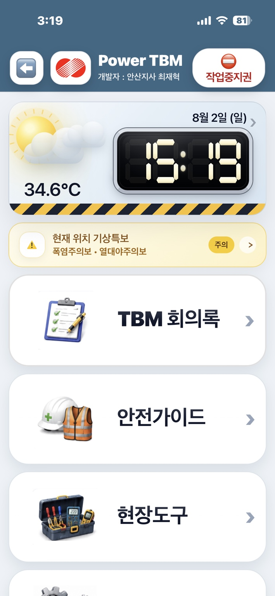
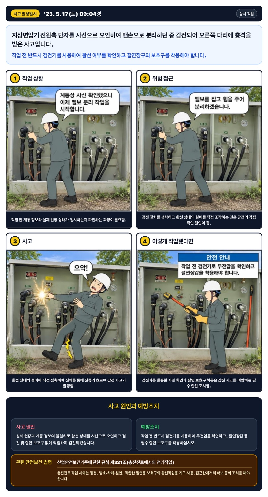

작업 전 확인부터 회의록, 사고사례 교육까지.현장에서 필요한 과정을 한 흐름으로 연결합니다.
앱 화면이 준비되면 여기에 표시됩니다.


저장하면 이 기기·브라우저에만 반영됩니다. 다른 기기에는 자동으로 동기화되지 않습니다.
시연을 진행하려면 브라우저의 JavaScript를 켜 주세요.
홈 화면에서 바로 실행하세요.
설치창이 나오지 않으면 브라우저 메뉴로 설치할 수 있습니다. 카카오톡·네이버 등 앱 안에서 열었다면 외부 브라우저로 열어 주세요. 이미 설치했다면 홈 화면의 초록색 ‘TBM 브리핑’ 아이콘을 실행하세요.